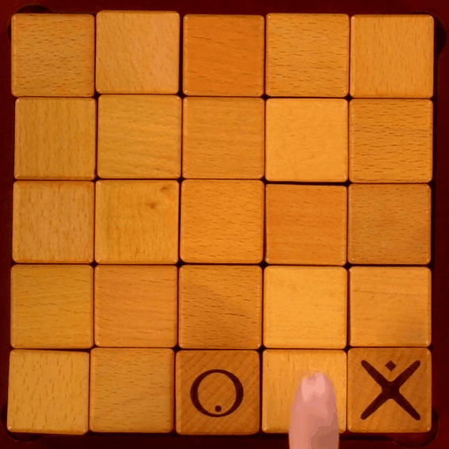
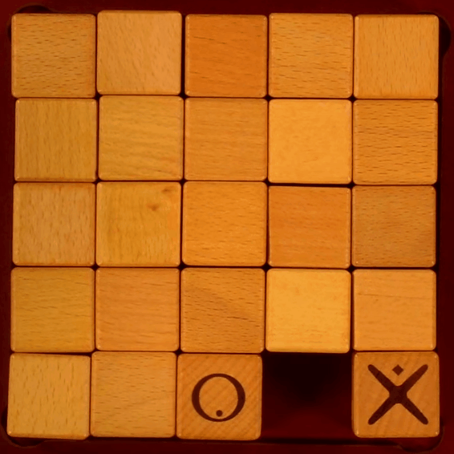

เกมนี้ได้ประยุกต์การเล่นมาจากบอร์ดเกม Quixo
ผู้เล่นจะเป็นผู้บัญชาการของหน่วยทหารหนึ่ง ต้องเข้าต่อสู้ทางยุทธวิธีกับทหารอีกฝ่ายหนึ่ง
การชนะ: ผู้บัญชาการจะชนะได้เมื่อสามารถนำกองกำลังของตัวเองวางตำแหน่งไว้ทางแนวตั้ง แนวนอน หรือแนวทะแยง
การเล่น: ผู้บัญชาการแต่ละคนที่เข้าสู้สมรภูมิจะเลือกได้ว่าจะเป็นฝ่าย X หรือ O เมื่อเข้าสู่การเล่นและถึงตาของผู้บัญชาการ จะต้องเลือกตำแหน่งขอบรอบนอกเพื่อดึงออกมาแล้วใส่ไปในตำแหน่งใหม่ แสดงถึงกองกำลังของผู้บัญชาการที่เข้าไปยึดยังพื้นที่นั้น จากนั้นจะจบตาแล้วเริ่มต้นตาของผู้บัญชาการอีกคน
กฏการวางกองกำลัง: เมื่อหยิบพื้นที่ออกมาแล้วจะไม่สามารถวางกลับเข้าไปทางเดิมได้ จะต้องเปลี่ยนพื้นที่หมากเข้าไปวางในตำแหน่งใหม่เท่านั้น
ภาพเหล่านี้แสดงลักษณะการวางที่ถูกต้อง


ภาพเหล่านี้แสดงลักษณะการวางที่ไม่ถูกต้อง และวิธีการแก้ไข


ขอบคุณภาพประกอบจาก
How to play Quixo